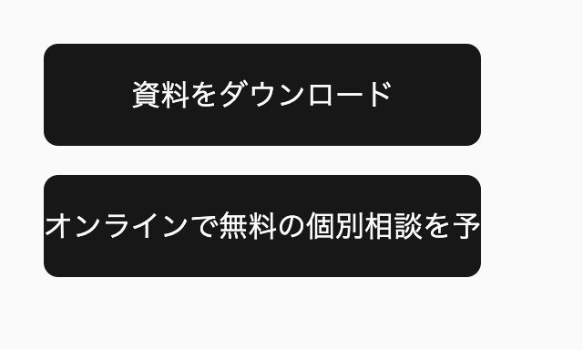
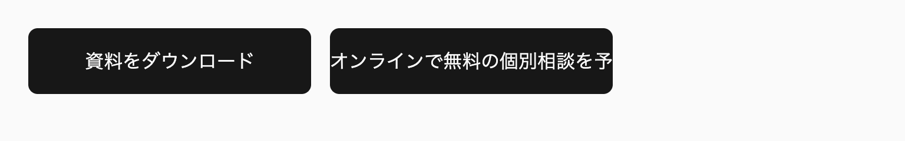
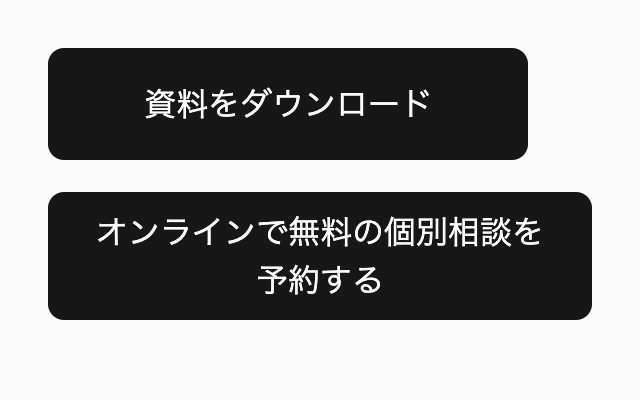
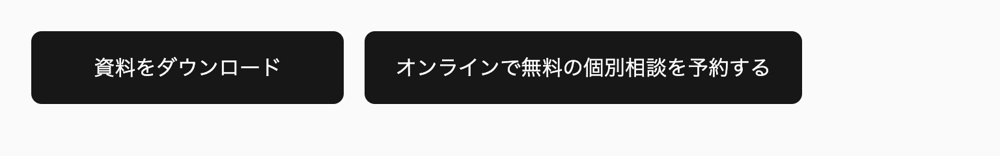
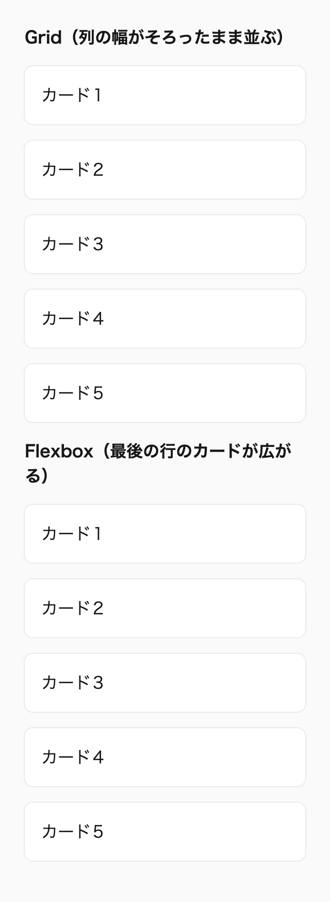
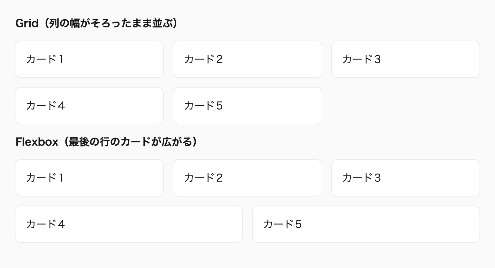

この章では、本書のすべてのルールの土台になる、CSSの捉え方を扱います。CSSは、プロパティと値を書けば思いどおりに動く言語ではありません。最終的な表示を決めるのはユーザーの環境とブラウザで、同じプロパティもレイアウトの方式によって働き方が変わります。JavaScriptと同じ感覚で表示をすべて制御しようとするほど、CSSは思いどおりにならない言語だと感じられます。
そこで本書では、2つの考え方を前提にしています。1つ目は、CSSをブラウザへの命令ではなく「提案」として書くことです。2つ目は、対象のブラウザをはっきり決め、そのブラウザが未対応の新しい機能は、プログレッシブ・エンハンスメントとして使うことです。
以降の章に出てくるルールの多くは、この2つのどちらかと、第2章で扱う保守しやすさから導かれています。たとえば「幅を固定しない」はブラウザに計算を任せるためで、「未対応の機能をレイアウトの要にしない」はどの環境でも内容を読めるようにするためです。個々のルールの扱いに迷ったときは、この章の考え方に戻って判断します。
私自身、以前は「デザインカンプを忠実に再現するのは実装者として当たり前」と考えていました。しかし、ユーザーの画面の幅や文字サイズの設定は無数にあり、カンプと同じ見た目を、すべての環境で保証するのは不可能です。今は、限られた環境で見た目を一致させるよりも、どの環境でも破綻しない状態を用意するほうが大切だと考えています。
この章を読むと、固定値で見た目を合わせるか、制約を書いて計算をブラウザに任せるかを、どの環境でも破綻しないかという基準で選べるようになります。新しい機能を使いたいときは、対象のブラウザの対応状況から、プログレッシブ・エンハンスメントとして使えるか、レイアウトの要にしてはいけないかを判断できます。指定が思いどおりに働かないときは、値を足す前に、要素がどのレイアウトの方式の中にあるかから原因を確かめられます。SNSで見かけたTipsや覚えた解決策も、仕様と問題の原因に照らして、いまの文脈で使ってよいかを判断できます。
この章は次の7つの節で構成しています。1-1と1-2は本書のルールの前提になるCSSの捉え方と方針、1-3はレイアウトの捉え方、1-4〜1-7はCSSを学ぶうえで大切なことです。
@supports と scripting メディア特性の使い方この章と同じ第I部には、CSSを書くときの判断と保守しやすさを扱う第2章「CSS設計の考え方」と、デザインカンプに向き合う姿勢を扱う第3章「デザインを再現する」を置いています。
固定値を避けてブラウザに任せる具体的な方法は、第13章「レスポンシブデザイン」（巻2）で扱います※1。
初めて読むときは、「1-1 CSSはブラウザへの「提案」である」「1-2 ブラウザサポートとプログレッシブ・エンハンスメント」「1-3 CSSはレイアウトのアルゴリズムの集まりである」を読みます。1-4〜1-7は、考え方を補う短い節なので、ほかの章を読んで迷ったときに戻ってください。
次のルールを先に押さえ、ほかのルールは、該当する場面で付録A「ルール一覧（巻3）」から引けば足ります。
scripting-for-js-dependent-styles：JavaScriptで表示を切り替える前提の隠す指定は、@media (scripting: enabled) と、初期化が成功したら付く属性を条件にして書きます。progressive-enhancement-if-harmless：対象のブラウザの一部しか対応していない機能は、未対応の環境でも内容を読めて操作できる場合に限って使います。no-unsupported-layout-features：対象のブラウザの一部が対応していないレイアウトの機能を、レイアウトの要にしません。no-chrome-only-check：表示はChromeだけでなく、Safari（iOSを含む）とFirefoxでも確かめます。この章で決めたのは、CSSという言語の捉え方と、対象にするブラウザの範囲です。ただし、この前提だけでは、コードを書くたびに何を優先するかまでは決まりません※2。
CSSは、ブラウザへの命令書ではなく「提案書」です。実装者が決めるのは「この範囲の中で、うまく表示してほしい」という条件までで、最終的な表示は、ユーザーの環境に合わせてブラウザが決めます。本書のルールは、すべてこの前提にもとづいています。
そのため、幅や高さを固定値で決めつけず、上限・下限・比率といった制約を示して、具体的な値の計算はブラウザに任せます。目指すのは、限られた環境でデザインカンプと寸分違わず一致させること（ピクセルパーフェクト）ではありません。どの環境で見てもデザインの意図が損なわれない「合格点」を取ることです。
Webページの表示は、実装者には決められない多くの変数に左右されます。ビューポートの幅と高さ、画面の解像度、ブラウザのズーム、ユーザーが設定した文字サイズ、OSに入っているフォントなどです。キーボードやスクリーンリーダーで操作する人もいれば、機械翻訳で読む人もいます。翻訳されれば、見出しの文字数は大きく変わります。
デザインカンプは、こうした変数の組み合わせの1つを切り取った静止画です。カンプの幅で、カンプの文字量で、デフォルトの文字サイズで見たときの一例にすぎません。その一例に合わせて値を決め打ちすると、ほかの組み合わせでは崩れます。
次のボタンは、カンプの寸法をそのまま書き写したものです。幅と高さを固定し、ラベルが折り返さないように指定しています。
/* 🙅♂ Not Recommended */
._cta-link {
display: inline flow-root;
inline-size: 240px;
block-size: 56px;
line-height: 56px;
text-align: center;
white-space: nowrap;
}カンプと同じ幅、同じラベルで見る限り、このボタンは完璧に見えます。しかし、ラベルが長くなると文字は枠からはみ出します。ボタンより狭い場所に置かれれば、ボタンそのものがはみ出します。ユーザーが文字サイズを大きくすれば、文字は56pxの高さに収まりません。どれも、実装者が「こうなるはずだ」と決めつけた値が、実際の環境と合わなかったことが原因です。
CSSで挫折やストレスを感じる原因の多くは、自分の書いた宣言だけで表示が決まると考えることにあります。先に挙げた変数は、どれも宣言と並んでブラウザが受け取る入力で、実装者には書き換えられません※1。
最終的な表示を制御しているのは、実装者ではなく、ユーザーのデバイスとブラウザです。CSSは、その決定権をユーザーの側に残すように作られていて、ユーザーは文字サイズを変えられ、ブラウザは画面の幅に合わせて文字を折り返し、ボックスの大きさを計算し直します。固定した値は環境が変わっても追従しないので、値を固定するほど、CSSは壊れやすくなります。
そこで本書では、CSSを「このルールの中で、あとはうまくやってほしい」という提案書として書きます。実装者が決めるのは、最小でもこの大きさは欲しい、これ以上は広げない、この比率を保ってほしい、といった条件です。条件を満たす具体的な値は、その場の環境を知っているブラウザに計算させます。
先ほどのボタンを、提案書の考え方で書き直すと次のようになります。
._cta-link {
display: inline flex;
justify-content: center;
align-items: center;
min-inline-size: min(100%, calc(240 / 16 * 1rem));
min-block-size: calc(56 / 16 * 1rem);
padding-block: 8px;
padding-inline: 24px;
text-align: center;
}幅と高さは、最小値だけを決めています。ラベルが長ければボタンは広がり、min(100%, …) で最小幅を親の幅以下に抑えているので、置き場所が狭いときに最小幅のせいで親からはみ出すことはなく、入りきらないラベルは折り返します。高さも最小値なので、文字サイズを大きくしたり、ラベルが2行に増えたりすれば、そのぶん高くなります。ラベルを上下の中央へ置くために、line-height を高さと同じ値にする必要もありません。
次の2つのデモを比べてください。固定値で書いたボタンでは、長いラベルが枠からはみ出し、はみ出した文字がページの背景に溶けて読めなくなっています。制約だけを決めたボタンは、ラベルに合わせて幅が広がります。幅のボタンで320pxを選ぶと、入りきらないラベルを折り返し、そのぶん高さを伸ばす様子も確認できます。

幅 320px

幅 768px

幅 320px

幅 768px
レイアウト以外でも、考え方は同じです。画像を表示枠に合わせて切り抜くなら、幅ごとに切り抜いた画像を用意するより、object-fit: cover でブラウザに切り抜かせるほうが、どの大きさの枠にも対応できます。装飾のグラデーションも、画像で用意するよりCSSで描くほうが、要素の大きさに合わせてブラウザが描き直してくれます。ブラウザは実際の要素の大きさを知っているので、任せたほうが対応できる大きさの範囲が広がります。
要素に本来備わっている性質を活かし、細かく指定する代わりにブラウザへ十分な情報を渡して、レイアウトの計算を任せる。こうした設計は「イントリンシック・デザイン」と呼ばれます。第13章で扱うレスポンシブ対応も、この考え方を土台にしています。
提案書として書くときの手がかりは、「固定値より制約で考える」ことです。「この値でなければならないか」ではなく、「どこまでなら許せるか」を問います。最小でどこまで縮んでよいか、最大でどこまで広がってよいか、縦横の比率は保つ必要があるか。こうした範囲を決めることが、実装者の仕事になります。
範囲を表す手段は、CSSにすでに十分そろっています。min-inline-size と max-inline-size、min()・max()・clamp() の関数、Gridの minmax() と auto-fit、flex-wrap: wrap、aspect-ratio などです。どれも1つの値を指定するのではなく、値の範囲や関係を指定する仕組みで、範囲の中のどの値を使うかはブラウザがその場の条件から決めます。
範囲を決めるときは、下限も忘れずに決めます。上限だけを決めた要素は、狭い場所に置かれると、中身が読めなくなるまで潰れることがあるからです。反対に、下限が親の幅より大きいと、今度ははみ出します。先ほどのボタンで下限を min(100%, …) で包んだのは、このためです。
固定値がまったく不要というわけではありません。アイコンやチェックボックスのように、本質的に大きさが決まっている小さな要素は、固定のサイズで問題ありません。固定値を書くときは、その値でなければならない理由を説明できるかを確かめます※2。
AIにデザインカンプからコードを書かせると、カンプに書かれた寸法をそのまま width と height に写したコードが返ってくることがよくあります。生成されたコードに固定値が並んでいたら、それぞれを制約に置き換えられないかを確認してください。
ブラウザに計算を任せる考え方は、グラデーションにたとえると分かりやすくなります。linear-gradient() では始点と終点の色を指定するだけで、その間の色は、要素の大きさに合わせてブラウザが補間します。途中の色を1ピクセルずつ指定する必要はなく、要素の大きさが変われば、ブラウザが補間をやり直します。
文字サイズやレイアウトも、同じように書けます。最も狭いときと最も広いときの値（端点）を決め、その間の値はブラウザに計算させます。次の見出しの文字サイズは、画面の幅が375pxのとき24px、1280pxのとき40pxで、その間の幅では2つの端点を結ぶ直線の上の値をとります。
@scope (.scoped.fluid-heading) to (.scoped) {
h2 {
/* 画面の幅 375px で 24px、1280px で 40px */
font-size: clamp(24 / 16 * 1rem, 1.768svi + 17.37 / 16 * 1rem, 40 / 16 * 1rem);
}
}clamp() の最小値と最大値が2つの端点で、真ん中の推奨値が端点を結ぶ式です※3。Gridの repeat() と minmax() で列を決める書き方も同じ考え方で、列の幅の下限と上限だけを決めれば、列の数と幅はブラウザが実際の幅から決めます。
計算を任せることは、制御を手放すことではありません。端点をどこに置くか、どこより小さくしてはいけないかを決めるのは、実装者です。ブラウザに渡すのは、その範囲の中の計算だけです。計算をブラウザと分担すれば、クエリで値を切り替える箇所が減ってコードを保守しやすくなり、表示もユーザーの環境に合わせて変わります。
制約で考えることに加えて、書かなくても済むCSSは書かないことも大切です。ブラウザには、何も指定しなくても働く標準の振る舞いがあります。ブロック要素は親の幅いっぱいに広がり、テキストは入りきらなければ折り返し、ボックスの高さは中身に合わせて決まります。border-color の初期値は文字色（currentcolor）なので、線の色を文字色とそろえるなら、色を指定する必要はありません。
宣言を1つ書くたびに、この標準の振る舞いを1つ上書きすることになります。上書きした振る舞いは、想定していない状況でも上書きされたままです。次の例では、幅と高さと線の色を指定し直しています。
/* 🙅♂ Not Recommended */
._notice {
inline-size: 100%;
block-size: 120px;
padding: 16px;
border: 1px solid oklch(30% 0 0deg);
color: oklch(30% 0 0deg);
}幅は指定しなくても親に合わせて広がり、高さは中身と padding から決まります。線の色を省略すれば color と同じ色になり、文字色を変えたときに線の色も一緒に変わります。必要なのは、ブラウザの標準の振る舞いと違う部分だけです。
._notice {
padding: 16px;
border: 1px solid;
color: oklch(30% 0 0deg);
}書かなかった部分は、ブラウザがその場の状況に合わせて決めます。文章が増えれば高さが伸び、狭い場所に置かれれば幅が縮みます。書かないことは手抜きではなく、ブラウザが対応できる状況を広げるための選択です※4。
この考え方は、ブラウザのデフォルトスタイルの扱いにも当てはまります。本書で使うリセットCSSのkiso.cssは、見出しの太さやボタンの余白、表の枠線のように役に立つデフォルトスタイルを残し、書くべきコードを減らす方針で作られています※5。
レスポンシブなWebサイトで目指すのは、限られた環境での満点ではなく、すべての環境での合格点です。ここでいう合格点とは、どの環境で見ても、デザインの意図が伝わり、内容を読めて、操作できる状態のことです。カンプの幅で満点を取っても、ほかの幅で赤点なら意味がありません。そもそも、カンプと同じ幅で見る人のほうが少数です。
ピクセルパーフェクトを目指さないことは、デザインを軽く扱うことではありません。合格点の中身として守るのは、余白の比率、文字サイズの階層、要素の並び順といったデザインのガイドラインや意図です。これらは、どの幅でも忠実に守ります。守らないのは、特定の幅でしか成り立たない寸法の一致です※6。
何をもって合格とするかは、実装者だけで決めません。カンプのない画面の幅での振る舞い、内容が変わったときの見せ方、細部をどこまで再現するかを、実装の前にデザイナーやクライアントと確かめておきます※7。
推奨寸法は1つの値に決めつけず、上限・下限・比率などの制約を示して、具体的な値の計算はブラウザに任せる。
css-as-suggestion
推奨画像の切り抜き、テキストの折り返し、列数の決定のようにブラウザが計算できる処理は、自前で作り込まずに CSS の機能に任せる。
delegate-to-browser
推奨すべての環境でデザインカンプと同じ見た目にすること（ピクセルパーフェクト）ではなく、どの環境でもデザインの意図が伝わり、内容を読めて操作できることを目標にする。
consensus-over-pixel-perfect
推奨カンプの幅以外での見せ方、文章量や要素の数が変わったときの見せ方、細部の再現の程度を、実装の前にデザイナーやクライアントと合意しておく。
agree-on-responsive-behavior
currentcolor キーワードの説明を含みます）本書が対象にするブラウザは、Safariが現行のメジャーバージョンから2つ前の最終版以降、Chrome、Edge、Firefoxが最新版です。2026年9月時点ではSafari 27が最新なので、Safari 18系の最終版である18.6以降が対象になります。新しい機能を使うときは、まずSafariの対応状況を確認します。
対象のブラウザの一部しか対応していない機能は、プログレッシブ・エンハンスメントとして使えるかどうかで判断します。未対応の環境でも内容を読めて操作でき、対応した環境ではより良い体験になるものだけを使います。分岐には @supports と scripting メディア特性を使い、表示の確認はChromeだけで済ませません。
Chrome、Edge、Firefoxは自動で更新されるので、多くのユーザーが最新版を使っています。一方、SafariはOSのアップデートと一緒に更新されるため、古いバージョンを使い続けるユーザーが一定数残ります。そのため、対象のブラウザの中で最も保守的な基準になるのがSafariです。新しいプロパティを使うときも、最初に確認するのはSafariの対応状況です。
バージョンの数え方には注意が必要です。Safariのバージョンは18の次が26で、番号が連続していません。そのため「2つ前」は番号の引き算ではなく、実際に出たメジャーバージョンを数えて求めます。2026年9月14日にSafari 27が出たので、1つ前が26、2つ前が18です。18系の最後のバージョンは18.6（2025年7月）なので、対象はSafari 18.6以降になります。
| 時期 | 最新のメジャーバージョン | 対象の下限 |
|---|---|---|
| 2024年9月〜2025年9月 | Safari 18 | Safari 16.6 |
| 2025年9月〜2026年9月 | Safari 26 | Safari 17.6 |
| 2026年9月〜 | Safari 27 | Safari 18.6 |
対象の下限は、新しいメジャーバージョンが出るたびに1つずつ上がります。次のメジャーバージョンが出たら、下限はSafari 26系の最終版です。iOSのSafariも同じ番号で考えます。
この基準は、本書のコード例とルールの前提です。案件で動作環境が決まっている場合は、案件の基準に従います。案件の基準がより古いSafariを含むなら、本書で「そのまま使える」としている機能にも、フォールバックが必要になることがあります。
案件の基準を決める場合は、対応率の数字だけで「使ってよい」と判断せず、3つの観点を合わせて見ます。1つ目は、未対応の環境で何が起きるかです。宣言が無視されるだけなのか、内容を読めなくなったり操作できなくなったりするのかで、許される範囲が変わります。
2つ目は、そのサイトを使う人のブラウザです。Can I Useのような全体の数字は世界中の利用者の平均なので、自サイトのアクセス解析とは大きく異なることがあります。学校の端末で使われる教材サイトと、最新の端末を使う人が多い開発者向けのサイトでは、同じ機能でも未対応の割合が違います。3つ目は、使えなかったときの害の大きさです。予約や手続きに代わりの手段がない行政や医療、金融のサービスは、趣味の読み物のサイトよりも対象を広げて考えます。
「何%の対応率なら使ってよい」という数字は、この3つを抜きにしては決められません。本書がSafariを基準に対象を固定しているのは、案件の基準がないときの出発点です。案件に基準があるなら、それを優先します。
基準を決めたあとは、プログレッシブ・エンハンスメントとして使う機能の確認方法も決めておきます。未対応のブラウザを手元に用意しなくても、その宣言をコメントアウトして、表示が読めて操作できるかを確かめれば、未対応の環境での見え方を推定できます。同じ機能を複数の箇所で使っているなら、箇所ごとに確認します。宣言を外すと表示が崩れる箇所は、フォールバックを足すか、その機能を使わないと決めます。
本書では、機能の対応状況を次のような枠で示しています。データはweb-featuresのもので、主要なブラウザごとに、対応した最初のバージョンが並びます。ほかに、Can I Use、MDN、WebKitのリリースノートでも確認できます。
Baseline新しく利用可能2026年5月から
コンテナスタイルクエリ
web-features 3.40.0 のデータ（2026年9月確認）
「広く利用可能」と表示される機能は、すべての主要なブラウザで対応してから長い時間がたっているので、本書の対象でもそのまま使えます。「新しく利用可能」と「一部のブラウザのみ」の機能は、Safariの欄のバージョンが18.6以下かどうかを確かめます。上のコンテナスタイルクエリは、2026年5月に「新しく利用可能」になったばかりですが、Safariは18で対応しているので、本書の対象ではそのまま使えます。
ただし、表示されるのは「途切れずに対応している最初のバージョン」です。たとえば @scope はSafari 17.4で対応しましたが、Safari 26.0〜26.3に <input> などで効かない不具合があったため、Safari 26.4と表示されます。数字が対象の下限より新しいときは、MDNで経緯を確かめます。
対象の一部しか対応していない機能でも、プログレッシブ・エンハンスメントとして使えるものがあります。判断の基準は2つあります。1つは、未対応の環境で従来どおりに表示されるか、簡単なフォールバックを用意できることです。もう1つは、対応した環境で、より良い体験を提供できることです。未対応のブラウザは、理解できない宣言を無視します。無視されても困らない機能なら、使わない理由はありません。
| 機能 | 未対応のブラウザ | 未対応の環境での表示 |
|---|---|---|
text-wrap: pretty |
Firefox、Safari 18系 | 通常の折り返しになる |
word-break: auto-phrase |
Safari、Firefox | 文節で区切らずに折り返す |
field-sizing |
Safari 26.1以前 | 入力欄が内容に合わせて伸び縮みしない |
text-box（cap や alphabetic を指定した場合） |
Firefox | 宣言が無効になり、文字の上下の余白が残る |
| ドキュメント間のビュートランジション | Firefox | アニメーションせずにページが切り替わる |
この表は2026年9月時点のものです。text-box のように、未対応の環境で余白の大きさが変わる機能は、レイアウトが崩れたり、表示が大きく変わったりしない範囲で使います。
対象の下限が上がると、プログレッシブ・エンハンスメントとして扱っていた機能が、そのまま使える機能に変わります。たとえば ::details-content はSafari 18.4で対応したので、下限がSafari 17.6だった2026年1月の時点では対象外でした。下限がSafari 18.6になった現在は、本書の対象のすべてで使えます。
反対に、未対応の環境での影響が大きく、プログレッシブ・エンハンスメントとして使いにくい機能もあります。未対応の環境でブロックごと無視されるアットルールと、無視されたときに表示の崩れが大きくなるレイアウト関連の機能です。2026年9月時点では、アンカーポジショニングと、絶対配置の要素への place-self（どちらもSafari 26で対応）がこれに当たります。sibling-index() と sibling-count()（Safari 26.2で対応）も同じです。
アットルールでは、以前はコンテナスタイルクエリがこの例でした。@scope も未対応の環境では中身がまとめて無視されますが、本書の対象はすべて対応しているので、前提の機能として使っています※1。
Baseline新しく利用可能2026年1月から
アンカーポジショニング（anchor-name）
web-features 3.40.0 のデータ（2026年9月確認）
たとえば、アンカーポジショニングでツールチップをボタンの横に配置したとします。未対応の環境では配置の指定が無視され、ツールチップは意図しない場所に表示されて、ほかの内容に重なることがあります。レイアウトの要になる機能は、対象のすべてが対応するまで待つか、別の方法で実現します。
ただし、使いにくいのは、その機能をレイアウトの要として使う場合です。ホバーしたカードに背景が滑らかに追従するような装飾的な演出なら、未対応の環境向けに従来の表現を用意して使えます。次の例は、アンカーポジショニングに未対応の環境でだけ、ホバーしたカードに直接背景色を付けるものです。
._card {
&:has(:any-link:hover) {
@supports not (anchor-name: --card) {
@media (any-hover) {
background-color: oklch(96% 0.02 250deg);
}
}
}
}表示の確認は、Chromeだけで済ませません。Chromeは、既存のプロパティの新しい仕様を、ほかのブラウザより先に実装することがよくあります。Chromeの最新版だけで確認していると、Chromeでしか成り立たない書き方に気づけません。
たとえば、justify-self と justify-items は、ブロックレイアウトでも使えるように仕様が広がりました。しかし、2026年9月時点で対応しているのはChromeだけです。
Baseline一部のブラウザのみ
ブロックレイアウトの justify-self
web-features 3.40.0 のデータ（2026年9月確認）
/* 🙅♂ Not Recommended */
._more-link {
display: block flow;
inline-size: fit-content;
justify-self: center;
}このコードは、Chromeでは要素が中央に寄りますが、SafariとFirefoxでは justify-self が無視され、左に寄ったままです。2026年9月時点の対応データでは、ブロックレイアウトの justify-self に対応しているのは、Chrome 130以降とEdgeだけです。ブロックの中央寄せには、どのブラウザでも同じ結果になる margin-inline: auto を使います。レスポンシブ対応で display をgridからブロックに戻す場合も、justify-items や justify-self が残っていないかを確かめます。
._more-link {
display: block flow;
inline-size: fit-content;
margin-inline: auto;
}ほかにも、単位つきの値どうしの割り算は、ブラウザによって対応の時期が大きく異なります。vw も、Chrome 145から条件によってスクロールバーを除いた幅で計算されるようになりました（2026年2月時点では、SafariとFirefoxは従来どおりです）※2。
開発中はChromeを使っていてもかまいません。ただし、作業を終える前に、Safari（iOSを含む）とFirefoxでも表示を確かめます。対象の下限にあたる古いSafariは手元で用意しにくいので、対応状況のデータでの確認と組み合わせます。
ここまでで、対象のブラウザと、未対応の環境で守ることは決まります。以降は、その判断をコードにするときの詳細です。@supports の使いどころ、フォールバックを書く位置の選び方、JavaScriptがない環境への備えを順に説明します。前から通して読むときは、案件の基準を決めたあと、必要になった節から読めば足ります。
@supports で対応した環境だけを変える@supports は、ブラウザが宣言を理解できるかどうかで分岐します。未対応の宣言はもともと無視されるので、新しいプロパティそのものを @supports で囲む必要はありません。@supports が必要になるのは、新しい機能に合わせて、既存の宣言も一緒に変えるときです。
<textarea> に field-sizing: content を指定すると、入力した量に合わせて入力欄が伸び縮みします。自動で伸び縮みするなら、ユーザーが手でサイズを変える機能（resize）は不要です。ただし、resize を無条件に止めると、未対応の環境では入力欄の高さが固定され、手で広げることもできなくなります。最大の高さも同じです。無条件に付けると、未対応の環境では、ユーザーの広げられる範囲が狭まります。そこで、手動のリサイズを止める指定と最大の高さを、field-sizing: content と一緒に @supports の中に書きます。
@scope (.scoped.inquiry-form) to (.scoped) {
textarea {
--_rows: 3lh;
--_max-rows: 8lh;
box-sizing: unset;
inline-size: -webkit-fill-available;
inline-size: stretch;
min-block-size: var(--_rows);
padding: 1em;
@supports (field-sizing: content) {
max-block-size: var(--_max-rows);
resize: none;
field-sizing: content;
}
}
}Baseline新しく利用可能2026年6月から
field-sizing
web-features 3.40.0 のデータ（2026年9月確認）
次のデモで入力欄に改行や文章を足すと、対応しているブラウザでは入力欄が伸び縮みし、未対応のブラウザでは右下のつまみで高さを変えられます。どちらの環境でも、入力するという目的は損なわれません。
デモ1-2-1 field-sizing に対応した環境でだけ、入力欄が内容に合わせて伸び縮みする（補足サイト）
反対に、対象のすべてが対応した機能のフォールバックは消します。次の例は、lh 単位に未対応の環境のために書いていたものです。lh はSafari 16.4で対応しているので、本書の対象ではこの分岐が使われることはありません。
/* 🙅♂ Not Recommended */
:root {
--icon-size: 1lh;
}
@supports not (top: 1lh) {
:root {
--icon-size: 1.5em;
}
}使われないフォールバックは、読む人に「まだ対応していないブラウザがある」と思わせ、消してよいかの判断を迷わせます。対象の下限を上げたときは、こうした分岐も見直します。なお、@supports selector(::-webkit-scrollbar) のように、selector() を使えばセレクタの対応状況でも分岐できます。
未対応の環境のための書き方には、新しい宣言をそのまま書く、従来の宣言を前に書く、@supports の中に書く、の3つがあります。どれを選ぶかは、未対応の環境で新しい宣言がいつ無効になるかと、一緒に変える宣言があるかで決まります。判断を誤ると、未対応の環境で従来の値まで失われます。
新しいプロパティそのものは、そのまま書きます。未対応のブラウザは、知らないプロパティの宣言を構文の段階で捨てるだけで、ほかの宣言には影響しません。text-wrap: pretty がこれに当たります。前の節の例で field-sizing を @supports の中に書いているのは、一緒に変える宣言とまとめて読めるようにするためです。外に書いても、未対応の環境では同じように捨てられるので、結果は変わりません。
既存のプロパティに新しい値や関数を使い、宣言に var() を含まない場合は、従来の宣言を前に書くか、新しい宣言を @supports の中に書きます。未対応のブラウザは、新しい値を含む宣言を構文の段階で無効とみなして捨て、前の宣言を使うので、どちらでも結果は同じです。「6-5 if()とattr()で条件と属性を値にする」の if() の例は前者、「12-2 cluster（巻2）」の flex-wrap: balance は後者で書いています。前者で書くなら、同じプロパティが2回並ぶと誤記に見えるので、前の宣言には「未対応の環境で使う値」であることをコメントで書きます。
宣言に var() を含む場合は、@supports の中に書きます。var() を含む宣言は、構文の検査が値の計算まで先送りされます。未対応の関数があると分かった時点では、前の宣言はもう使えないので、宣言は「計算値の時点で無効」になり、プロパティの初期値か継承した値が使われます。型付きの attr() は var() と組み合わせることが多いので、6-5では @supports の中に書いています。
新しい機能に合わせて、ほかの宣言もまとめて切り替える場合も、@supports の中に書きます。display でレイアウトの方式を切り替えると、grid-template-columns や子の aspect-ratio のように、ほかの宣言の意味も変わるからです。「11-11 grid-lanesで石積みのレイアウトを組む（巻2）」で display を2つ並べずに @supports を使うのは、このためです。@supports の条件は検索できるので、対象のすべてが対応した時点で、分岐をまとめて消せます。
scripting メディア特性でJavaScriptのない環境に備えるJavaScriptで表示を切り替える前提のスタイルは、@media (scripting: enabled) の中に書きます。典型的なのが、画面に入ったらふわっと表示するアニメーションです。表示する前の状態で要素を待たせておき、画面に入ったらJavaScriptが再生を始めます。
@scope (.scoped.feature-list) to (.scoped) {
li {
/* 監視を始めた JavaScript がルートに付ける属性があるときだけ待たせる */
&:is(:scope[data-motion-mode="motion"] *) {
@media (prefers-reduced-motion: no-preference) and (scripting: enabled) {
animation-name: --fade-in, --translate-from;
animation-duration: var(--duration--reveal);
animation-fill-mode: both;
animation-play-state: paused;
}
}
&[data-revealed]:is(:scope[data-motion-mode="motion"] *) {
animation-play-state: initial;
}
}
}この条件がないと、JavaScriptが無効な環境では再生を始める処理が動かず、要素がいつまでも透明なままになります。ただし、scripting: enabled はJavaScriptが有効なことしか表しません。スクリプトの読み込みに失敗したり、実行の途中でエラーが起きたりしても、条件は当てはまります。そこで、待たせる条件には、JavaScriptが初期化に成功した時点で付ける属性（ここでは data-motion-mode="motion"）も加えます。画面に入ったら、JavaScriptが data-revealed を付けて再生します。属性が付く前に処理が止まれば、要素は最初から表示されたままです※3。
Baseline広く利用可能2026年6月から（新しく利用可能になったのは2023年12月）
scripting メディア特性
web-features 3.40.0 のデータ（2026年9月確認）
同じように、JavaScriptでカード全体をクリックできるようにしているなら、cursor: pointer を scripting: enabled のときだけ指定します。反対に、@media (scripting: none) を使えば、JavaScriptが動かない環境で読み込み中の表示を隠すこともできます。以前はiOS 17より前のSafariが scripting に対応していなかったため、属性で代わりに判定する工夫が必要でした。現在の本書の対象では、その必要はありません。
必須対象のブラウザは、Safari は現行のメジャーバージョンから2つ前の最終版以降、Chrome、Edge、Firefox は最新版とする。
browser-support-target
推奨新しい機能を使うときは、最初に対象の Safari で使えるかを確認する。
check-safari-support-first
必須対象のブラウザの一部しか対応していない機能は、未対応の環境でも内容を読めて操作できる場合に限って、プログレッシブ・エンハンスメントとして使う。
progressive-enhancement-if-harmless
推奨プログレッシブ・エンハンスメントとして使う機能は、その宣言を外した表示を確かめてから使う。同じ機能を複数の箇所で使うときは、箇所ごとに確かめる。
verify-fallback-by-removal
禁止対象のブラウザの一部が対応していないレイアウトの機能を、レイアウトの要として使わない。
no-unsupported-layout-features
推奨新しい機能に合わせて既存の宣言も変えるときは、その宣言を @supports の中に書く。
supports-for-dependent-declarations
推奨対象のブラウザがすべて対応している機能には、フォールバックや @supports の分岐を書かず、残っていれば消す。
remove-unneeded-fallbacks
推奨フォールバックは、新しいプロパティならそのまま書き、var() を含まない新しい値なら従来の宣言を前に書くか @supports の中に書き、var() を含む宣言と、ほかの宣言もまとめて切り替える宣言は必ず @supports の中に書く。
fallback-method-by-invalidation
必須JavaScript で表示を切り替える前提のスタイル（表示する前の状態として要素を隠すなど）は、@media (scripting: enabled) の中に書き、さらに初期化に成功した JavaScript が付ける属性を条件にする。
scripting-for-js-dependent-styles
必須表示の確認は Chrome だけで済ませず、Safari（iOS を含む）と Firefox でも行う。
no-chrome-only-check
禁止ブロックレイアウトの要素に、justify-self や justify-items を指定しない。
no-justify-self-in-block-layout
field-sizing とアンカーポジショニングの例）CSSは、プロパティと値の組を並べたものではなく、ブラウザが要素の大きさと位置を計算するためのアルゴリズムの集まりです。通常フロー、Flexbox、Grid、位置指定といったレイアウトの方式は、それぞれが別のアルゴリズムで、プロパティはそのアルゴリズムへの入力として読まれます。同じ width: 1000px が、要素の置かれた方式によって、守られる値にも、縮む出発点にも、無視される値にもなるのはこのためです。
この節では、width が効かないという1つの現象から、CSSを見る見方を変えるところまでを説明します※1。
width が効かないと感じる理由CSSを書き始めて最初に覚える宣言は、たいてい color: blue のようなものです。書いた値がそのまま文字の色になるので、CSSを「プロパティに値を書けば、そのとおりに表示される言語」と捉えたくなります。プロパティごとに「この値ならこう表示される」という対応を覚えていけば、CSSを書けるようになると考えるわけです。
ところが、大きさと位置に関わるプロパティでは、この捉え方が通用しません。リンクに width: 1000px を書いても、幅は変わりません。横並びのカードで同じ指定をすると、カードは画面の幅に収まるまで縮みます。
プロパティと値の対応表しか持っていないと、こうした振る舞いは「CSSは予測できない」という印象になります。印象のまま値を足し引きすると、見た目は合っても原因は残ります。効かない width に display: block を足し、それでも合わなければ position: absolute や !important を重ねるような修正は、どの宣言がなぜ効いているのかを誰も説明できないコードを残します。
ブラウザは、ページを表示するたびに、すべての要素の大きさと位置を計算します。この計算の手順を、レイアウトのアルゴリズムと呼びます。アルゴリズムは並べ方ごとに別のものが用意されていて、主なものに通常フロー、Flexbox、Grid、位置指定（position: absolute と fixed）があります。この並べ方の区別を、本書ではレイアウトの方式と呼び、MDNではレイアウトモードと呼んでいます。要素がどの方式で計算されるかは、主に親の display と要素自身の position で決まります。
プロパティは、こうしたアルゴリズムへの入力です。アルゴリズムは入力を自分の規則で解釈し、使わない入力は無視します。gap を通常フローのブロックに書いても子の間が空かないのは、通常フローのアルゴリズムが gap を使わないからです。反対に、同じ入力を複数のアルゴリズムが使う場合は、アルゴリズムごとに別の意味として扱われます。
color: blue が期待どおりに働いたのは、color が方式に左右されないプロパティだからです。文字の色や font-size のように、文字と描画に関わるプロパティの多くは、どの方式の中でも同じように働きます。方式によって意味が変わりやすいのは、width、margin、z-index のように、大きさと位置と重なりを決めるプロパティです。
width が別の入力として読まれる冒頭の2つの場面も、それぞれのアルゴリズムが width をどう使うかで説明できます。リンクのような文字と一緒に行の中を流れる箱は、幅を中身の文字から決めるので、行を組むアルゴリズムは width を使いません。横に並べたフレックスアイテムでは、Flexboxのアルゴリズムが width を仮の大きさとして受け取り、並べて足りなければ縮めます。通常フローのブロックに同じ指定をすると、今度は親より広くても1000pxのまま保たれます。
つまり、width は「幅をこの値にする」という命令ではなく、方式ごとに意味の違う入力です。% の基準、位置指定での振る舞い、z-index が効く条件も、同じように方式で変わります※2。
この見方に立つと、指定が効かないときの問いが変わります。「このプロパティは壊れているのか」ではなく、「この要素は今どの方式の中にいて、その方式でこのプロパティはどう働くのか」を問います。プロパティそのものが壊れていることはめったになく、ほとんどの場合は、方式の規則どおりに振る舞っています（ルール identify-layout-mode-first）。
問いが変わると、直し方も変わります。リンクに幅を持たせたいなら、width の値を変えたり宣言を重ねたりせず、リンクを幅を持てる種類の箱に変えます。値を調整するより、その方式の規則に沿って入力を選び直すほうが、原因を取り除けることが多くあります。
方式の規則を、書き始める前にすべて覚える必要はありません。前提として持っておくのは、方式が違えば同じプロパティの意味が変わる、ということです。この前提があれば、効かない指定に出会ったとき、調べる範囲を今の方式の規則へ絞れます。「1-5 解決策を丸暗記しない」で取り上げた画像の下の隙間も、画像が通常フローの行の中に置かれていることから生まれる現象です。
この見方は、「1-1 CSSはブラウザへの「提案」である」の考え方とつながっています。最終的な大きさと位置を決めるのはブラウザのアルゴリズムで、実装者が書くのは、そのアルゴリズムへの入力です。どのアルゴリズムが入力をどう使うかを知っていれば、固定値で結果を決めつけなくても、意図した範囲に収まる入力を選べます。
CSSを学ぶうえで最初に大切なのは、基礎を固めることです。ここでいう基礎とは、ボックスモデル、プロパティとその値、セレクタと擬似クラス、カスケードと継承といった、CSSのどの書き方にも共通する仕組みの知識です。新しい機能も、フレームワークも、AIが出力するコードも、この基礎の上で動いています。
基礎を学ぶ順番は、決まったロードマップに合わせる必要はありません。作りたいものに必要な知識から学び、一次情報を読み、自分で手を動かして確かめます。このページでは、基礎が要る理由と、私が勧める学び方を説明します。
基礎の知識がないと、CSSを思いどおりに扱えません。要素がなぜその幅になるのか、余白がなぜ重なるのかを説明できなければ、デザインを再現するたびに、値を少しずつ変えて試すことになります。値を変えて見た目が合ったとしても、なぜ合ったのかが分からないので、次の場面で同じ判断を再現できません。
Tailwind CSSのようなユーティリティファーストのフレームワークを使っても、これは変わりません。Tailwind CSSを使えばCSSを書かなくて済む、と言われることがありますが、Tailwind CSSはクラスを通してCSSの宣言を書く道具です。items-center で要素が交差軸の中央にそろうのは、このクラスが align-items: center を指定しているからです。align-items がFlexboxとGridでどう働くかを知らなければ、期待どおりにそろわない場面で原因を探せません。
BootstrapやBulmaのようなUIフレームワークは、用意された部品の範囲であれば、フレームワーク独自の知識だけで使えます。しかし、用意された部品から外れる表現が必要になると、結局はCSSを書くことになります。そこで必要になるのが、フレームワークの外にある基礎の知識です。
AIにCSSを書かせる場合も同じです。AIはそれらしいCSSをすぐ出力しますが、そのコードは、デザインカンプの寸法を写しただけで、内容や画面の幅が変わると崩れがちです。どのプロパティを使い、どういう考え方で書くかをプロンプトで指示すれば出力は改善しますが、その指示を書くときも、出力の良し悪しを判断するときも、基礎の知識が要ります※1。
CSSを学び始めるとき、スクールや学習サイトが用意する学習ロードマップを指針にする人は多いと思います。ロードマップは、学ぶ項目を順番に並べたもので、何から手を付ければよいかが分かるという利点があります。
ただし、ロードマップは、知識を決まった順番に積み上げていくことを前提にしています。実際にコードを書くときに必要な知識は、作りたいものによって決まり、その順番はロードマップの順番と一致しません。ロードマップの後半に置かれている知識が、最初に作るページで必要になることは珍しくありません。
たとえば、アニメーションはロードマップの後半に置かれがちです。しかし、作りたいWebサイトにアニメーションがあるなら、今それを学ぶのが近道です。ロードマップの順番にこだわると、まだそこまで進んでいないからと実装を諦めたり、今は必要のない項目から順に学んだりすることになります。ロードマップは学ぶ範囲を知るための地図として使い、順番は作りたいものに合わせて決めてかまいません。
チュートリアルのコードをそのまま書き写すだけでは、知識はなかなか身につきません。書き写したコードは動きますが、なぜその書き方を選んだのかを自分で考えていないので、少し違う場面になると応用できないからです。チュートリアルの動画を見ているなら、途中で止めて、自分ならどう書くかを考えてから続きを見ます。自分の書き方とチュートリアルの書き方が違えば、その違いが学ぶきっかけになります。
誰かに教わっているなら、なぜそのプロパティを使うのか、別の書き方ではいけないのかを質問するのも効果的です。教える側も、理由を説明しようとすることで、自分の知識があいまいな箇所に気づけます。
CSSの一次情報は、W3Cが公開している仕様書です。MDN Web Docsは、仕様書の内容を例とともに解説した、一次情報に近い資料です。解説記事は便利ですが、書き手の理解を通した二次情報なので、誤りや古い情報が含まれていることがあります。
とはいえ、仕様書は英語で書かれていて、用語の定義も厳密なので、慣れないうちは読み進めるのが大変です。そこで、AIと一緒に読むことを勧めます。知りたい仕様書のURLをAIへ渡して、「この分野の知識が少ないので、この仕様書の内容を初心者向けに説明してください」と頼みます。分からない箇所は、続けて何度でも質問できます。
ただし、AIの説明が誤っていることもあります。AIの説明で全体をつかんだら、重要な箇所は仕様書やMDNの原文で確かめます。AIを仕様書の代わりにするのではなく、仕様書を読むための補助として使うのがよいと考えています。
知識がもっとも定着するのは、自分で手を動かしたときです。読んだり見たりして得た知識は、実際に使ってみて初めて、どの場面で役に立つのかが分かります。
私はモンスターハンターというゲームが好きで、新しい武器を使うときは、操作方法やテクニックを動画で調べます。しかし、動画を見ただけでその武器を使いこなせるようにはなりません。調べたテクニックを実際にモンスターを相手に試し、失敗しながら覚えていきます。CSSも同じで、読んで知った書き方は、自分で書いて試すまで使える知識になりません。
たとえば、Gridに苦手意識があるなら、Gridだけを使って、いろいろな形のカードを組んでみます。仕事のコードで試すのが難しければ、CodePenのように、ブラウザ上でHTMLとCSSを書いてすぐに結果を確かめられるサービスを使います。小さな例をいくつも作るうちに、どのプロパティが何を決めているのかが見えてきます。
新しいプロパティが出たときも、私は仕様を読むだけで終わらせず、CodePenでデモを作ったり、ブログに書いたりしています。実際に書いてみると、どんな場面で便利か、これまで手間のかかっていた実装の代わりになるかといった使いどころが見つかります。
基礎の学習は地味で、すぐに成果が見えるものではありません。しかし、基礎の理解が広く深いほど、思いどおりにならない場面で原因を突き止めやすくなり、応用できる範囲も広がります。フレームワークや周辺の技術は数年で入れ替わりますが、CSSの基礎の知識は長く使えます。
CSSが思いどおりに動かないとき、検索やAIで見つけた解決策を、貼り付けるだけで済ませないことを勧めます。なぜその問題が起きるのか、それは仕様どおりの挙動なのかブラウザの不具合なのか、なぜその解決策で直るのかを確かめます。原因まで調べておけば、少し形の違う問題に出会ったときにも、同じ知識で対処できます。
問題に出会ったとき、症状をキーワードにして検索し、見つかったコードを貼り付けるのは自然な行動です。貼り付けて表示が直れば、その場の作業は終わります。
しかし、解決策だけを覚えても、その問題がなぜ起きたのかは分からないままです。次に似た問題に出会ったとき、それが同じ原因によるものだと気づけないので、また一から検索することになります。見つけた解決策が、今の状況に合わない古い方法や、別の副作用を持つ方法であっても、理由を知らなければ判断できません。
検索の代わりにAIへ尋ねる場合も同じです。AIは問題の解決策を示してくれますが、その解決策が正しいかを確かめ、別の場面に応用するのは、使う人の側の仕事です。
例として、古くから知られている問題を取り上げます。<img> 要素で画像を置くと、画像の下に数ピクセルの隙間ができることもあります。この問題を検索すると、多くの場合、次のような解決策が見つかります。
img {
vertical-align: bottom;
}img {
display: block flow;
}._figure {
display: block grid; /* 画像の親をGridにする */
}どれを貼り付けても隙間は消えるので、ここで作業を終えることもできます。しかし、3つの書き方は、隙間を消す仕組みがそれぞれ違います。次のデモでは、画像を囲む枠に背景色を付けているので、指定がないときの隙間と、3つの書き方で隙間が消える様子を確かめられます。このデモでは、ブラウザのデフォルトスタイルのまま表示しています。4つの枠のうち、画像の下に枠の赤い背景色が細い帯として見えるのは「指定なし」だけで、3つの書き方の枠では画像の下端と枠の下端がそろいます。
デモ1-5-1 画像の下にできる隙間と、それを消す3つの書き方（補足サイト）
隙間の原因は、<img> 要素の display の初期値が inline であることです。外側の表示種別がインラインの要素は、文中の文字と同じように、行の中に並べられます。画像は、行の中に置かれた大きな1文字のように扱われます。
行の中の文字は、ベースラインという線にそろえて並べられます。ベースラインは、アルファベットの「x」の下端がそろう線です。vertical-align の初期値は baseline なので、画像も、その下端をベースラインにそろえて置かれます。
ベースラインの下には、「g」や「p」「y」のように下に伸びる文字の部分（ディセンダー）のための空間があります。行の高さは、この空間を含めて計算されます。画像にはディセンダーがありませんが、行の中に置かれている以上、行の下端までの空間は残ります。これが、画像の下にできる隙間の正体です。
vertical-align: bottom で隙間が消えるのかvertical-align は、インライン要素を、行の中で縦方向のどこにそろえるかを決めるプロパティです。初期値の baseline では、画像の下端はベースラインにそろいます。
値を bottom にすると、画像の下端は、ベースラインではなく行の下端にそろいます。行の下端は、ディセンダーのための空間を含めたいちばん下なので、画像の下に空間が残りません。画像はインライン要素のまま、置く位置だけが変わります。
本書が勧めるリセットCSSのkiso.cssも、画像や動画などの要素にこの指定をしています。画像をインライン要素のまま扱えるので、文中にアイコンの画像を置くような使い方も妨げません※1。
display: block flow で隙間が消えるのかdisplay: block flow を指定すると、<img> 要素の外側の表示種別がブロックに変わります。ブロックの要素は、行の中には並ばず、前後の要素とは別の段として置かれます。
行の中に置かれていないので、ベースラインにそろえる処理も、ディセンダーのための空間もありません。そのため、隙間がなくなります。ただし、画像は文中の文字とは並ばなくなり、text-align による左右の配置も効かなくなります。隙間を消すために、隙間とは関係のない振る舞いまで変えていることになります。
画像の親に display: block grid や display: block flex を指定しても、隙間はなくなります。GridやFlexboxの直接の子要素は、グリッドアイテムやフレックスアイテムになり、外側の表示種別がブロックとして扱われます。仕様では、この変換をブロック化（blockification）と呼びます。
ブロック化された画像は、display: block flow を指定した場合と同じく、行の中には置かれません。そのため、ベースラインの下の空間もなくなります。画像に何も指定していないのに隙間が消えるのは、親の display が子の扱いを変えているからです。
この問題の原因を一度調べておくと、隙間を消す方法だけでなく、インライン要素が行の中でどう並ぶか、ベースラインとは何か、display が要素の外側の振る舞いをどう変えるかといった知識が手に入ります。どれも、画像に限らず使える知識です。
たとえば、display: inline-block を指定した要素や、<button> 要素の下に、似た隙間ができることもあります。原因を知っていれば、これもベースラインにそろえて置かれているからではないかと見当を付けられます。検索する前に、vertical-align や display を確かめるところから始められます。
思いどおりにならない問題は、CSSの仕組みを知るよい機会です。貼り付けたコードで直ったときこそ、なぜ直ったのかを確かめておくと、次に似た問題に出会ったときの調べ方が変わります。
SNSや技術ブログで流れてくるCSSのTipsは、新しい書き方を知るきっかけになります。私自身もTipsを参考にし、発信もしています。ただし、Tipsはそのまま使わず、仕様とブラウザの対応状況を確かめ、自分で試してから使うことを勧めます。
便利に見えるTipsにも、特定の条件でしか成り立たない前提や、一部のブラウザでしか動かない機能が含まれていることがあります。Tipsそのものに誤りが含まれていることもあります。このページでは、3つの例を使って、Tipsのどこを確かめるとよいかを説明します。
::first-line で見出しの1行目を装飾する次のコードは、見出しの日本語と英語を <br> で改行し、1行目と2行目で文字の大きさと色を変えるTipsです。::first-line は1行目だけを選ぶ擬似要素で、古くからすべての主要なブラウザが対応しています。
<h2>私たちについて<br>About</h2>/* 🙅♂ Not Recommended */
h2 {
color: var(--foreground--accent);
font-size: calc(32 / 16 * 1rem);
text-align: center;
&::first-line {
display: block;
margin-block-end: 0.5em;
color: var(--foreground--muted);
font-size: calc(16 / 16 * 1rem);
}
}このTipsには2つの問題があります。1つ目は、日本語の見出しが必ず1行に収まることを前提にしていることです。::first-line が選ぶのは、文字列の区切りではなく、表示されたときの1行目です。画面の幅が狭いときや、見出しの文言が長くなったとき、機械翻訳で別の言語に訳されたときには、日本語の部分が2行に折り返されます。すると、日本語の2行目には英語用のスタイルが当たり、デザインが崩れます。
2つ目は、仕様上効かない宣言が含まれていることです。::first-line に指定できるのは、フォント、色、背景、文字の間隔、文字の装飾、行の高さといった、行の中の文字に関するプロパティに限られます。display や margin は効かないので、このコードの display: block と margin-block-end: 0.5em は無視されます。Tipsの書き手が、効かない宣言を書いたまま公開していることもあるということです。
見出しと、それに添える副題や英語の表記は、HTMLの <hgroup> 要素でまとめられます。日本語と英語が別の要素になるので、それぞれに直接スタイルを指定でき、間隔も gap で決められます。
<section class="scoped about-section">
<hgroup class="_section-heading">
<h2>私たちについて</h2>
<p class="_heading-en" lang="en">About</p>
</hgroup>
<!-- ... -->
</section>@scope (.scoped.about-section) to (.scoped) {
._section-heading {
display: block grid;
gap: 8px;
text-align: center;
}
h2 {
color: var(--foreground--accent);
font-size: calc(32 / 16 * 1rem);
text-wrap: balance;
}
._heading-en {
color: var(--foreground--muted);
}
}<hgroup> は、W3C版のHTMLの仕様から削除された時期があったので、使えない要素だと思われていることがあります。現在のHTMLの仕様（HTML Living Standard）では、2022年に、見出しと、その前後の段落（<p>）をまとめる要素として定義し直されています。CSSのTipsを確かめるときには、HTMLの仕様の変化も一緒に確かめる必要があります。
文字サイズには rem を使う、というのはよく知られた助言です。ブラウザの設定で文字サイズを大きくしているユーザーがいて、ChromeやFirefoxでは、px で指定した文字はこの設定に追従しないからです（2026年10月確認）。rem はルート要素の文字サイズを基準にする単位なので、ルート要素の文字サイズがユーザーの設定に従っていれば、rem で指定した文字も設定に追従します。
この助言の理由を確かめずに使うと、次のようなコードになることがあります。ルート要素の文字サイズを10pxにして、1rem を10pxにそろえ、デザインカンプの値を rem に換算しやすくするTipsです。
/* 🙅♂ Not Recommended */
:root {
font-size: 10px;
}
h2 {
font-size: 2.4rem; /* 24px */
}このコードでは、ルート要素の文字サイズを px で固定しているので、rem の基準も固定されます。ユーザーが設定で文字サイズを大きくしても、ルート要素は10pxのままで、rem で指定した文字も大きくなりません。rem を使っていても、px で書いた場合と同じく、文字は設定に追従しません。
ルート要素の文字サイズを変えると、外部のCSSを読み込んだときにも問題が起きます。多くのCSSは、1rem がブラウザのデフォルトの16pxであることを前提に書かれているので、その部分の文字や余白が小さくなります。本書では、この書き方をルール「ルートの文字サイズを変えない」で禁止しています。
「rem を使う」という結論だけを覚えて、rem が何を基準にしているのかを確かめなかったことが、この問題の原因です。ブラウザの文字サイズの設定を変えて表示を確かめれば、文字が大きくならないことにすぐ気づけます※1。
justify-self次のような2つのTipsがあったとします。1つは、要素の中身を上下左右の中央に置くのに、GridやFlexboxを使わず、ブロックレイアウトのまま align-content と justify-items を指定すればよいというものです。もう1つは、要素を中身の幅にして左右の中央に置くのは、justify-self: center の1行で済むというものです。
._hero {
min-block-size: 100svb;
align-content: center;
justify-items: center;
}
._more-link {
justify-self: center;
}どちらも、仕様としては正しい内容です。CSSの仕様では、これらの配置のプロパティを、GridやFlexbox以外のブロックレイアウトでも使えるように広げています。ただし、ブラウザの対応状況は、プロパティによって違います。ブロックレイアウトの align-content はすべての主要なブラウザが対応していますが、justify-items と justify-self に対応しているのは、2026年10月時点でChromeとEdgeだけです。
Baseline新しく利用可能2024年4月から
ブロックレイアウトの align-content
web-features 3.40.0 のデータ（2026年9月確認）
Baseline一部のブラウザのみ
ブロックレイアウトの justify-self
web-features 3.40.0 のデータ（2026年9月確認）
Chromeだけで確かめていると、このTipsはどちらも正しく動いているように見えます。SafariとFirefoxで確かめて初めて、2つ目のTipsでは要素が左へ寄ったままだと気づけます※2。
このTipsからは、対応状況のほかにも学べることがあります。これまで、justify-items はGridの中でしか効かなかったので、display をGridから通常のブロックに戻せば、指定が残っていても影響はありませんでした。ブロックレイアウトでも効くようになると、戻し忘れた指定が、ブロックに戻した後のレイアウトにも影響します。
/* 🙅♂ Not Recommended */
._layout {
display: block grid;
justify-items: center;
@media (width >= calc(640 / 16 * 1rem)) {
display: revert;
}
}このコードは、Gridのときだけ子要素を中央に寄せるつもりで書かれています。しかし、justify-items に対応したブラウザでは、640px以上でブロックに戻した後も、子要素が中央に寄ります。対応していないブラウザでは左に寄るので、ブラウザによって表示が変わります。
._layout {
display: block grid;
justify-items: center;
@media (width >= calc(640 / 16 * 1rem)) {
display: revert;
justify-items: unset;
}
}新しい機能のTipsからは、その機能の使い方に加えて、既存のコードへの影響も読み取れます。この例から分かるのは、レイアウトの方式を切り替えるときは、元の方式のために書いた指定も一緒に戻す必要があるということです。
Tipsは、発信する人が善意で共有しているものです。しかし、発信する人も、私を含めて、誤った内容や古くなった方法を発信してしまうことがあります。受け取る側は、内容をそのまま信じるのではなく、次の点を確かめてから使います。
まず、そのTipsが前提にしている条件を確かめます。文字数、画面の幅、要素の数といった条件が変わっても成り立つかを考えます。次に、使われているプロパティの仕様をMDNや仕様書で確かめ、効かない宣言が含まれていないかを見ます。最後に、Baselineの表示やMDNの対応表で対象のブラウザが対応しているかを確かめ、実際に複数のブラウザで表示します。
便利に見える書き方ほど、その便利さと引き換えにしている条件があります。Tipsの利点だけでなく、成り立たなくなる条件にも目を向けておくと、Tipsを自分のコードに取り入れるときの判断を誤りにくくなります。
CSSでは、1つの見た目を作る方法が複数あり、どれが適切かは、その場の文脈によって決まります。中身の量が変わるか、ほかの要素にどう影響するか、後から変更しやすいかによって、選ぶべき方法が変わります。そのため、1つの得意な方法をあらゆる場面に当てはめるのではなく、複数の選択肢を知ったうえで、文脈に合うものを選ぶことを勧めます。
経験を積むと、「中央寄せならこの方法」「横に並べるならこの方法」のように、作業ごとに決まった書き方ができてきます。一度うまくいった方法や、慣れている方法を使えば、迷わずに速く書けます。私にも、特定の書き方にこだわっていた時期がありました。
しかし、決まった書き方が、どの場面でも最適とは限りません。ソフトウェア開発には「銀の弾丸はない」という言葉があり、どんな問題も解決する万能の方法はないという意味で使われます。CSSでも、同じ見た目を作る方法ごとに、そのスタイルが当たる要素だけでなく、親や兄弟、子要素への影響が違います。ある場面ではうまくいった方法が、別の場面では思わぬ副作用を生むことがあります。
方法を選ぶときは、見た目を再現できるかに加えて、その宣言がほかの要素に与える影響、中身の量が変わるかどうか、後から変更しやすいかを考えます。選択肢を多く知っているほど、こうした条件に合う方法を見つけやすくなります。
「中央に寄せる」という作業1つをとっても、文脈によって適切な方法が変わります。中央に寄せたいのは、テキストのようなインラインの内容なのか、ブロックの要素そのものなのか。その要素は通常の流れの中に置くのか、モーダルのように流れから切り離して置くのか。寄せたいのは1つの要素だけなのか、続く要素もまとめてなのか。これらの答えによって、使うプロパティが決まります。
見出しのテキストを中央に寄せるなら、多くの人は text-align: center を指定すると思います。テキストを中央に寄せるという目的なら、これで正解です。
._section-title {
text-align: center;
text-wrap: balance;
}では、デザイナーから「見出しが1行なら中央寄せ、複数行なら左揃えにしてほしい」と頼まれたらどうでしょうか。text-align: center は、複数行になっても各行を中央に寄せるので、この条件には合いません。この場合は、テキストではなく、見出しの要素そのものを中央に寄せます。
._section-title {
inline-size: fit-content;
margin-inline: auto;
}inline-size: fit-content を指定すると、見出しの幅は中身の幅になり、margin-inline: auto で左右の中央に置かれます。テキストが1行に収まる間は、見出しが中央に寄ります。テキストが長くなると、見出しの幅は親の幅まで広がり、テキストは左揃えのまま折り返されます。見出しがGridの子要素なら、margin-inline: auto ではなく justify-self: center でも同じように配置できます。同じ「中央寄せ」でも、1行のときだけ寄せるのか、何行でも寄せるのか、親のレイアウトが何かによって、選ぶ方法が変わります。
カードを横に並べる場合も、「今はGridの時代だからGridで書く」と決めてしまうのではなく、並べ方の条件から選びます。最後の行に入るカードの数が列の数に満たないとき、そのカードを列の幅のまま並べるか、残りの幅いっぱいに広げるかで、適した方法が変わります。
._card-grid {
display: block grid;
grid-template-columns: repeat(auto-fill, minmax(min(360px, 100%), 1fr));
gap: 16px;
}._card-flex {
display: block flex;
flex-wrap: wrap;
gap: 16px;
& > * {
flex-grow: 1;
flex-basis: 360px;
}
}Gridは、親が列の数と幅を決めるので、最後の行のカードもほかの行と同じ幅で並びます。Flexboxは、子要素が自分の幅を決めるので、最後の行に残ったカードが、余った幅を分け合って広がります。次のデモで幅を変えると、最後の行の振る舞いの違いを確かめられます。たとえば幅のボタンで768pxを選ぶと、Gridでは2行目に2枚が並んで右端の列が空き、Flexboxでは2行目の2枚が行の幅を半分ずつ使います。320pxではどちらも1列に、1280pxではどちらも5枚が1行に並ぶので、違いは出ません。

幅 320px

幅 768px
列の幅をそろえたいならGridが、最後の行を広げたいならFlexboxが、短いコードで書けます※1。
同じ考え方は、CSSの書き方を支える道具を選ぶときにも当てはまります。SNSでは、特定の道具を使うべきだ、あるいは使うべきではないという強い主張をよく見かけます。しかし、どの道具にも利点と欠点があり、プロジェクトの文脈によって適否が変わります。
Tailwind CSSにも、デザイントークンにない値が紛れ込みにくいという利点と、Gridのレイアウトを扱いにくいという欠点があります※2。どの道具を選んでも、UIをどの単位で部品にし、どう名付けるかという判断は残ります※3。
Sassも、CSSに変数やネストが加わったことで、不要になったと言われることがあります。小規模や中規模のサイトであれば、Sassを使わなくても困らない場面が多く、私も最近はSassを使う機会が減りました。ただし、@function、@mixin、@each のようなSassの機能で、トークンやユーティリティを生成すると効率よく書けるプロジェクトもあります※4。
選択肢を増やすには、慣れていない方法にも手を伸ばす必要があります。たとえば、Gridに苦手意識があると、慣れているFlexboxで何でも組んでしまいがちです。Flexboxで書くこと自体は問題ではありませんが、Gridで書けば短く済むレイアウトまでFlexboxで組むと、子要素の幅の計算や入れ子が増えて、コードが複雑になります。
よく使うコードをスニペットとして保存しておくのは、作業を速くするよい方法です。ただし、スニペットが最適なのは、それを作ったときと同じ文脈の場合に限られます。中央寄せのスニペットを2つか3つ用意しても、中央寄せの方法はそれよりずっと多く、それぞれに向く場面と副作用があります。スニペットを使うときも、今の文脈に合っているかを確かめます。
新しい機能や方法を知ったら、実際に手を動かして試し、既存の方法と比べます。比べるときは、どちらが短く書けるかだけでなく、中身や画面の幅が変わったときにどう振る舞うかも確かめます。この比較を繰り返すことで、文脈に合う方法を選べるようになります※5。